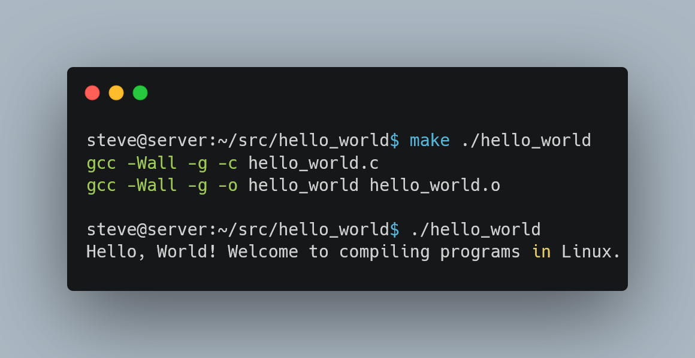

If you’re new to Linux, one of the most exciting and empowering skills you can learn is how to compile programs directly from source code. In this guide, we will walk you through the process of compiling programs in Linux—from understanding the basics of how source code is turned into executables, to building and installing a simple C program using tools like gcc and make. Whether you’re curious about what happens under the hood or you need to compile a program for custom features and latest versions, this tutorial is designed for you.
Introduction
Compiling programs in Linux may sound intimidating, but it’s actually a straightforward process once you break it down into simple steps. For many beginners, using precompiled binaries (those “ready-to-use” packages) is common. However, knowing how to compile from source gives you:
- Greater Control: Customize programs and get the latest features.
- Learning Experience: Understand the inner workings of your system.
- Freedom of Choice: Use software that isn’t available as a binary package in your distribution.
In this article, we will explain:
- What it means to compile a program.
- The importance of source code in the Linux ecosystem.
- Step-by-step instructions on compiling a C program.
- An interactive exercise that will let you practice these skills.
- Best practices and troubleshooting tips.
Grab your terminal, install the necessary tools, and let’s dive in!
What Does It Mean to Compile?
Compiling is the process of translating human-readable source code into machine language that your computer’s processor can execute. The journey from source code to the final executable involves several key steps:
- Preprocessing: Handling macros and file inclusions.
- Compilation: Converting the code into assembly language.
- Assembly: Translating assembly language into machine code (binary).
- Linking: Combining various compiled files (object files) and libraries to create one executable.
This process ensures that your high-level instructions (like those in C or C++) become instructions your computer can run in the form of binary code.
The Importance of Source Code
The availability of source code lies at the heart of what makes Linux truly powerful. Open access to the source code allows:
- Innovations among developers.
- Detailed customization to fit your needs.
- Rapid troubleshooting and community-driven improvements.
Compiling programs from source is an essential part of this ecosystem because it allows you to build the latest versions, even if your preferred distribution doesn’t provide precompiled binaries for them.
Why Compile Programs Instead of Installing Binaries?
1. Availability
Some programs are not available as precompiled binaries in your Linux distribution’s repositories. By compiling from source, you can obtain software that might otherwise be unavailable on your system.
2. Timeliness
Distributions may use older package versions to ensure stability, but if you need the latest version, compiling from source can be the only solution. It allows you to access cutting-edge features or bug fixes that have not yet been packaged.
3. Customization
By compiling yourself, you can often enable or disable specific features, optimize for your hardware, or experiment with free software in ways that pre-built binaries might not allow.
Understanding the Linux Build Ecosystem
Linux is unique compared to other operating systems due to its open nature. Here are a few elements to understand:
- Software Repositories: Collections of precompiled binaries provided by your Linux distribution.
- Development Tools: Tools such as
gcc(GNU C Compiler) andmakeare the backbone of Linux software compilation. - Makefiles: Instructions written for
makethat guide the build process by managing dependencies and defining command sequences.
Imagine the Linux build ecosystem as a well-choreographed dance in which each tool and file plays its part to deliver a fully functional program.
Key Tools for Compiling on Linux
Before diving into our step-by-step process, let’s review the main tools you’ll need for compiling programs in Linux:
- gcc: The GNU C Compiler, used to compile C source files.
- make: A utility that automates the build process using instructions from a Makefile.
- tar: A command-line tool to archive and extract files (often used to handle source code packages).
Most Linux distributions do not install development tools by default. You may need to install a meta-package (e.g., build-essential on Debian/Ubuntu) that includes these tools:
sudo apt update && sudo apt install build-essentialCompiling a Sample C Program: Step-by-Step
Let’s walk through an example similar to the GNU Project’s diction program, but simplified for beginners. We will compile a simple C program that prints “Hello, Linux!” and learn the process along the way.
1. Setting Up Your Environment
Start by creating a directory for your source code, and then navigate into it:
mkdir -p ~/src/hello
cd ~/src/hello2. Creating a Simple C Program
Create a file named hello.c with the following content:
#include <stdio.h>
int main() {
printf("Hello, Linux!\n");
return 0;
}You can create the file using a text editor like nano, vim, or gedit:
nano hello.cSave and close the file.
3. Writing a Basic Makefile
For automation, create a file named Makefile in the same directory with the following content:
# Define the compiler
CC = gcc
# Compiler flags for warnings and debugging info
CFLAGS = -Wall -g
# Target executable name
TARGET = hello
# Default rule
all: $(TARGET)
# Rule to build the target
$(TARGET): hello.o
$(CC) $(CFLAGS) -o $(TARGET) hello.o
# Rule to compile hello.c into hello.o
hello.o: hello.c
$(CC) $(CFLAGS) -c hello.c
# Clean up build files
clean:
rm -f *.o $(TARGET)This Makefile defines:
- The default target
all, which builds the executablehello. - A rule to compile
hello.cinto an object filehello.o. - A rule to link
hello.ointo the final executable. - A
cleanrule to remove generated files.
4. Building the Program
Run the following command in your terminal:
makeExpected output:
gcc -Wall -g -c hello.c
gcc -Wall -g -o hello hello.oThis output confirms that hello.c has been compiled correctly into an object file and then linked to produce the executable hello.
5. Running Your Program
To run the newly compiled program, simply enter:
./helloExpected output:
Hello, Linux!Congratulations! You have successfully compiled and run your first C program on Linux.
Detailed Look: The Compilation Process in Action
To reinforce what we learned, let’s look at the process in more detail by revisiting some of the steps used in typical GNU Project compilations (as described in our source text):
Obtaining and Unpacking Source Code
Many open-source programs are distributed in compressed tar files (tarballs). Although we compiled our “Hello, Linux!” program from a simple text file, let’s review the general steps used to work with larger source code packages.
Download the Source Code:
Using
ftporwgetto obtain the tarball, for example:mkdir -p ~/src cd ~/src wget ftp://ftp.gnu.org/gnu/diction/diction-1.11.tar.gzExtract the Tarball:
Use the
tarcommand to extract:tar xzf diction-1.11.tar.gz lsYou will see a new directory (such as
diction-1.11) containing the source tree.Examine the Source Tree:
Change into the newly created directory and inspect files:
cd diction-1.11 lsTypically, you might see several source files (
.c), header files (.h), and documentation files (README,INSTALL).
The Role of Configure and Makefiles
Many larger projects include a configure script that adapts the source code to the specifics of your Linux environment. Here’s how it works:
Running the Configure Script:
In the source directory, run:
./configureThe script will test your system and create a
Makefiletailored for your environment.Building the Program Using
make:After configuration, simply run:
makeThis will compile the source files and link them together according to the rules specified in the Makefile.
Installing the Program:
To install the program system-wide (usually as root), use:
sudo make installThe executable will be copied to a system directory (commonly
/usr/local/bin).
A key advantage of using make is that it only rebuilds components that have changed. For example, if you update a single source file, running make will compile only that file and relink the executable rather than rebuilding from scratch.
Common Pitfalls and Troubleshooting
Even with a straightforward process, building from source can sometimes lead to issues. Here are some common pitfalls and how to address them:
Missing Development Tools:
If you encounter errors likegcc: command not found, ensure that you have installed the necessary development packages (e.g.,build-essentialon Debian/Ubuntu or equivalent on other distros).Permission Issues:
When installing software, you might run into permission errors in directories like/usr/local/bin. In such cases, usesudowith the installation command.Dependency Errors:
Some programs require additional libraries. Read theREADMEorINSTALLfiles provided with the source code to ensure all prerequisites are installed.Compilation Warnings and Errors:
If you face errors duringmake, inspect the output for hints. Sometimes, cleaning the build usingmake cleanbefore rebuilding helps resolve conflicts.
Remember, the flexibility provided by Linux means you have full control over these steps—it’s all part of the learning experience!
Your Turn!
Now it’s time for you to try compiling a program on your own. Follow these steps:
Exercise: Compile a “Hello, World!” Program
Create a Project Directory:
Open your terminal and run:
mkdir -p ~/src/hello_world cd ~/src/hello_worldWrite Your C Program:
Create a file named
hello_world.cwith this content:#include <stdio.h> int main() { printf("Hello, World! Welcome to compiling programs in Linux.\n"); return 0; }Create a Makefile:
In the same directory, create a file named
Makefilewith the following content:CC = gcc CFLAGS = -Wall -g TARGET = hello_world all: $(TARGET) $(TARGET): hello_world.o $(CC) $(CFLAGS) -o $(TARGET) hello_world.o hello_world.o: hello_world.c $(CC) $(CFLAGS) -c hello_world.c clean: rm -f *.o $(TARGET)Compile and Run:
In your terminal, execute:
make ./hello_worldYour Output:
You should see:
Hello, World! Welcome to compiling programs in Linux.
If the above steps work successfully, congratulations—you just compiled and ran your own C program!

Solution Explanation:
- The Makefile automates the compilation and linking process.
- The
makecommand reads the Makefile and builds the executable only if necessary. - The executable runs and prints a friendly message to the terminal.
Quick Takeaways
- Compiling transforms source code into machine code.
- Source code is the foundation of Linux’s freedom and flexibility.
- Learning to compile programs deepens your understanding of Linux and software development.
- Essential tools include
gcc,make, andtar. - The process typically involves running
./configure,make, andsudo make install. - Using Makefiles streamlines repeated build tasks and ensures only modified files are recompiled.
FAQs – Common Questions About Compiling Programs in Linux
Q1: What is the purpose of the ./configure script?
A1: The ./configure script customizes the source code for your system by checking dependencies, setting paths, and generating a Makefile tailored to your environment.
Q2: How does make decide what to compile?
A2: make relies on the rules defined in the Makefile, comparing timestamps between source files and their corresponding object files to determine what needs recompilation.
Q3: Do I need to compile programs if my distribution offers binaries?
A3: Not always—but compiling provides access to the latest features, helps you learn more about how Linux works, and is sometimes the only option if the binary is unavailable.
Q4: What troubleshooting steps should I follow if my build fails?
A4: Check for missing dependencies, ensure that required development tools are installed, read error messages carefully, and try cleaning the build with make clean before recompiling.
Q5: Can I share my custom-compiled programs with others?
A5: Yes, because Linux’s open-source philosophy promotes the sharing of programs. However, always respect licensing terms provided in the source code’s documentation.
Engage!
We’d love to hear from you! After compiling your program, share your experiences in the comments below or on social media using the hashtag #LinuxCompilation. Your feedback and questions can help others who are just starting on their Linux journey. Engage with fellow beginners and experts alike to build a supportive community around open-source development.
Conclusion
In this guide, we explored everything you need to know about compiling programs in Linux – from the basic theory of how source code transforms into an executable to hands-on steps using a sample “Hello, World!” program. We covered both the technical and practical aspects, ensuring you understand every step of the process. Now that you’ve got the fundamentals, it’s time to expand your skills by exploring more advanced projects or contributing to open-source software.
Share!: If you enjoyed this guide and found it helpful, please share it with fellow Linux enthusiasts and subscribe for more in-depth tutorials. Start practicing and soon you’ll become comfortable compiling even larger and more complex programs. Happy compiling!
References
For more detailed insights and advanced techniques, check out these credible sources:
By following this comprehensive guide, you now have the tools and knowledge to compile programs on Linux, experiment with source code, and contribute to the vibrant open-source ecosystem. Whether you’re troubleshooting a build or developing your own software, these skills will empower you on your Linux journey.
Happy compiling and never stop exploring!
Happy Coding! 🚀
You can connect with me at any one of the below:
Telegram Channel here: https://t.me/steveondata
LinkedIn Network here: https://www.linkedin.com/in/spsanderson/
Mastadon Social here: https://mstdn.social/@stevensanderson
RStats Network here: https://rstats.me/@spsanderson
GitHub Network here: https://github.com/spsanderson
Bluesky Network here: https://bsky.app/profile/spsanderson.com
My Book: Extending Excel with Python and R here: https://packt.link/oTyZJ